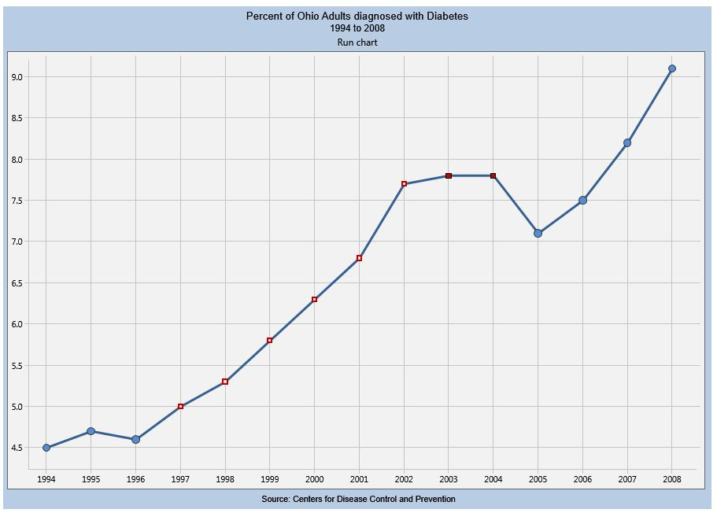

Run chart
Description / Graphical Method / Run chart
A run chart is a line graph of data plotted over time. By collecting and charting data over time, you can find trends or patterns in the process. Because they do not use control limits, run charts cannot tell you if a process is stable. However, they can show you how the process is running. The run chart can be a valuable tool at the beginning of a project, as it reveals important information about a process before you have collected enough data to create reliable control limits.
Run charts show individual data points in chronological order.
